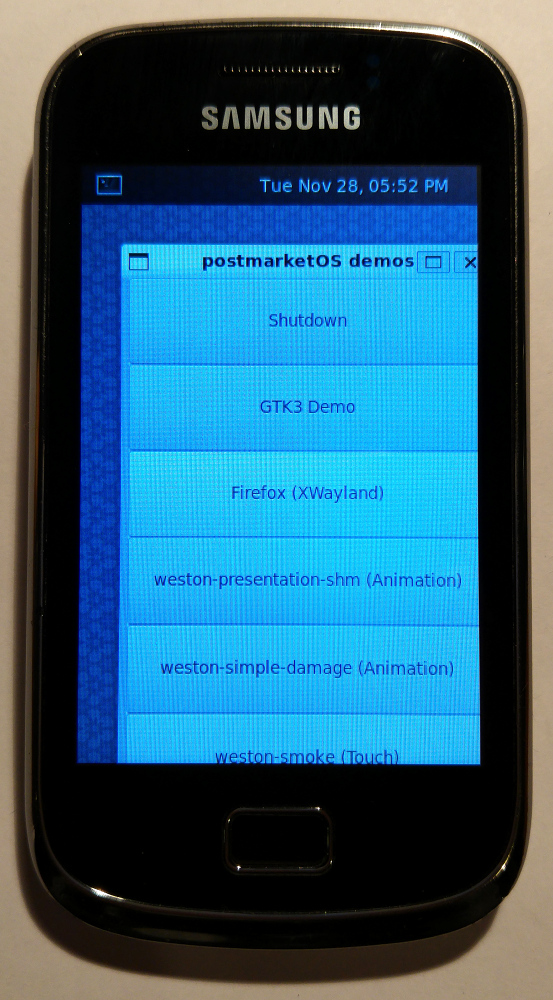

Samsung Galaxy Mini 2 (samsung-jena)
| This device is still running on armhf, although the processor supports armv7. If you own it, change it and test it that way. |
|
 Samsung s6500d | |
| Manufacturer | Samsung |
|---|---|
| Name | Galaxy Mini 2 |
| Codename | samsung-s6500d, s6500, jena |
| Released | 2012 |
| Category | testing |
| Original software | Android 2.3.4 |
| postmarketOS kernel | 3.4 from Cyanogen |
| Hardware | |
| Chipset | Qualcomm Snapdragon S1 (MSM7227A) |
| CPU | 800 Mhz Cortex-A5 |
| GPU | Adreno 200 |
| Display | 320×480 |
| Storage | 4 GB |
| Memory | physically probably 512MiB, limited by kernel to ~385MiB (faulty dices/Java something?) |
| Architecture | armv7 |
{kind=link}
| USB Networking |
Works
|
|---|---|
| Flashing |
Works
|
| Touchscreen |
Partial
|
| Display |
Works
|
| WiFi | |
| FDE | |
| Mainline |
Broken
|
| Battery | |
| 3D Acceleration | |
| Audio | |
| Bluetooth | |
| Camera | |
| GPS | |
| Mobile data | |
| SMS | |
| Calls | |
| USB OTG | |
| NFC | |
| Accelerometer | |
|---|---|
| Magnetometer | |
| Ambient Light | |
| Proximity | |
| Hall Effect | |
| Barometer | |
| Power Sensor | |
| Camera Flash | |
|---|---|
| Keyboard | |
| Touchpad | |
| USB-A | |
| HDMI/DP | |
| Ir TX | |
| Ir RX | |
| Stylus | |
| Haptics | |
| Ethernet | |
| FOSS bootloader | |
Contributors
Maintainer(s)
Users owning this device
- Halamix2 (Notes: SD card slot is broken)
- Sputnik1973 (Notes: Simply nugget.)
- Tfuxu (Notes: Unfortunately completely dead, possibly because of eMMC issues)
What works
- Boots
- SSH through USB
- display
- flashing
What does not work
- Restart after ~2 minutes 22 seconds
- No input (keys and screen)
- osk-keyboard
- Wi-Fi
- XWayland
- FDE
- Not mainlined
- No charging with turned off phone (is it even supported?)
- 3D acceleration
- Accelerometers and other sensors
- Audio
- Bluetooth
- Camera
- GPS
- Mobile data
- SMS
- Voice
Devices
| Component | Hardware | Downstream | Downstream driver/firmware | Upstream | Upstream driver/firmware | Notes |
|---|---|---|---|---|---|---|
| Touchscreen | unknown | P | unknown | - | - | it doesn't seem very responsive in some situations; contains menu and back touch keys, event0 |
| Display | msmfb30_30001 | Y | unknown | - | - | works, /sys/class/graphics/fb0/name is weird, oh well, Qualcomm |
| Wi-Fi | AR6003? | N | unknown | - | - | |
| Bluetooth | unknown | N | unknown | - | - | |
| Battery | bq27425 | N | unknown | - | - | |
| 3D | Adreno200 | N | unknown | - | - | should be able to use freedreno |
| Camera | sr300pc20? | N | unknown | - | - | |
| Audio | unknown | N | unknown | - | - | AFAIK none of the Qualcomm-based devices have working audio yet :( |
| Magnetometer | bma222(e)? | N | unknown | - | - | event2 |
| Accelerometer | bma222(e) | N | unknown | - | - | event4 |
| Orientation | bma222(e) | N | unknown | - | - | event3 |
| Proximity | Sharp gp2a? | N | unknown | - | - | event5 |
| Temperature | unknown | N | unknown | - | - | there should be one, right?? |
| FM Radio | unknown | N | unknown | - | - | Android sees this as radio-tavarua under /sys/class/video4linux/radio0 |
| Vibrations | unknown | N | unknown | - | - | |
| Buttons | unknown | N | unknown | - | - | contains home and volume buttons, 7x27a_kp, event1 |
| Audio buttons | unknown | N | unknown | - | - | contains power button as well, event6 |
| GPS | unknown | N | unknown | - | - | |
| Mobile data | unknown | N | unknown | - | - | |
| SMS | unknown | N | unknown | - | - | |
| Calls | unknown | N | unknown | - | - | |
| OTG | FSA9280 | N | unknown | - | - | not supported by phone, theoretically supported by SoC, maybe possible wih external power source; That chip is responsible for switching USB functionality with UART etc. |
| FDE | - | P | - | - | - | osk-sdl works, partition is unlocked and then phone is stuck, no screen, no ssh, no telnet |
| Mainline | - | - | - | N | - | No existing dtb for device and SoC |
| XWayland | - | N | - | - | - | not tested yet, can be tested with xeyes, I hope this is enough |
Chips
cat /sys/bus/i2c/devices/*/name sr300pc20 #camera? CMOS image sensor sx1508q sc628a marimba marimba sx1509q sec_touch FSA9280 # USB multiplexer bma222 #accel bma222e #accel hscd_i2c gp2a pn544 #NFC controller, s6500 uses this, s6500d doesn't, don't know why it's there bq27425 #battery gauge
To do
| informations below may be chaotic and change often |
SMSM_RESET
Most annoying problem since everything on the phone has to be done within 2 minutes. After about 2mins 22secs phone reboots with dmesg showing SMSM: Modem SMSM state changed to SMSM_RESET This message is hardcoded into arch/arm/mach-msm/smd.c
Probably caused by modem, check all MODEM and MSM*_MODEM_* related options in menuconfig (there is one called reset, one reboot and one just modem) or find binary blobs if possible.
Touch screen
The screen as well as two touch buttons (menu and back) are combined together as /dev/input/event1. It displays some sort of animation when pressing buttons in postmarket demos window in weston but only for first press or two. weston-calibrate does not work
Home button and volume buttons are /dev/input/event1, where power button is recognised as /dev/input/event6
Mainline
Currently we have working 3.4 kernel, no DTS files for qcom-msm7227a.
Get data form all over the kernel source code (mainly arch/mach-msm/board-<board name>.c for starters and recreate it in .dts file(s).
Get UART working, then test basic DTS with just basics to get earlycon/earlyprintk working:
- used voltage is 1.8V
- needed resistor is *probably* 619kΩ
- unknown name of the port in original kernel, candidates are ttyMSM0, tty0, ttyHS0, ttyHSL0 and ttyGS0
- trying to get UART on 0xa9a00000 (ttyMSM0)
- dtb probably misses clocks, maybe interrupts and other things
| This dtb file goal is to get working UART, nothing more, rest of the work will be continued on regular git repository when/if UART starts working |
Useful links (mainly dts stuff)
The Mainline Kernel – our docs about mainlining
Qualcomm mainline porting — our sparse docs about Qualcomm mainlining
Qualcomm SOC Mainlining Project – sadly no MSM7227a
Documentation/devicetree/ inside linux kernel files, should contain newest documentation about dts files, should be most reliable source of information
How to enter flash mode
Press power button and hold home button and VOL-, then press VOL+ to continue
Alternatively, plug in microUSB plug with GND and ID pins connected through 300KΩ resistor. (so-called USB jig)
Installation
For now see Installation Guide and Flashing on Porting to a new device
Partitions
fdisk -l /dev/mmcblk0
omitting empty partition (25)
Disk /dev/mmcblk0: 3.7 GiB, 3909091328 bytes, 7634944 sectors
Units: sectors of 1 * 512 = 512 bytes
Sector size (logical/physical): 512 bytes / 512 bytes
I/O size (minimum/optimal): 512 bytes / 512 bytes
Disklabel type: dos
Disk identifier: 0x00000000
Device Boot Start End Sectors Size Id Type PIT name read-writeable?
/dev/mmcblk0p1 * 1 40 40 20K 4d QNX4.x CFG_DATA
/dev/mmcblk0p2 41 340 300 150K 45 unknown QCSBL
/dev/mmcblk0p3 341 41300 40960 20M c W95 FAT32 (LBA) FAT RW
/dev/mmcblk0p4 41301 7634943 7593643 3.6G 5 Extended ? / partition.bin
/dev/mmcblk0p5 49152 51151 2000 1000K 46 unknown OEMSBL
/dev/mmcblk0p6 51152 53151 2000 1000K 47 unknown APPSBL
/dev/mmcblk0p7 53152 57151 4000 2M 5d unknown SSD RW
/dev/mmcblk0p8 57152 81727 24576 12M 48 unknown APPS / boot partition RW
/dev/mmcblk0p9 81728 87871 6144 3M 4a unknown MODEM_ST1
/dev/mmcblk0p10 87872 94015 6144 3M 4b unknown MODEM_ST2
/dev/mmcblk0p11 94016 110399 16384 8M 90 unknown PERSIST RW
/dev/mmcblk0p12 110400 134975 24576 12M 91 unknown RECOVERY RW
/dev/mmcblk0p13 134976 143167 8192 4M 92 unknown PARAMETER RW
/dev/mmcblk0p14 143168 151359 8192 4M 93 Amoeba SECURE RW
/dev/mmcblk0p15 151360 152383 1024 512K 95 unknown PIT RW
/dev/mmcblk0p16 152384 1176383 1024000 500M 82 Linux swap / Solaris SYSTEM RW
/dev/mmcblk0p17 1176384 1483583 307200 150M 94 Amoeba BBT CACHE RW
/dev/mmcblk0p18 1483584 3396415 1912832 934M 83 Linux USERDATA RW
/dev/mmcblk0p19 3396416 3420991 24576 12M 65 Novell Netware 386 EFS
/dev/mmcblk0p20 3420992 3470143 49152 24M 9a unknown IMG_BACKUP RW
/dev/mmcblk0p21 3470144 3478335 8192 4M 63 GNU HURD or SysV MISC RW
/dev/mmcblk0p22 3478336 3580735 102400 50M 67 unknown HIDDEN RW
/dev/mmcblk0p23 3580736 7429803 3849068 1.9G 64 Novell Netware 286 UMS(user files) RW
/dev/mmcblk0p24 7429804 7437995 8192 4M 58 unknown MODEM_BKP RW